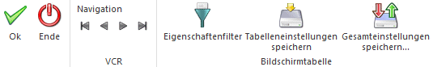

Für alle Kostenträger können bis zu 30 verschiedene und bis zu 255 Zeichen lange Zusatzfelder definiert und verwendet werden.
Über die Funktion der Zusatzleisten können Sie sogar verschiedene Varianten von Zusatzfeld-Konstellationen verwenden.
Die Definition der Führungstexte, des Feldtyps und der Feldlängen dieser Zusatzfelder erfolgt im Programmteil WinLine START im Menüpunkt Optionen/Zusatzfelder. Dort finden Sie auch ausführliche Informationen zur Verwendung der Zusatzleisten.
Diese Zusatzfelder können auch bei diversen Auswertungen mit angedruckt werden.
Die Eingabe der Daten pro Kostenträger erfolgt im Menüpunkt Stammdaten/Kostenträger im Register ZUSATZ.
Des Weiteren werden hier die Eigenschaften eines Kostenträgers angezeigt. Eigenschaften können ein Stammdatenobjekt näher beschreiben bzw. können über die Eigenschaften gewisse Optionen bei einem Objekt hinterlegt werden.
Im Filter kann sowohl auf die Zusatzfelder als auch auf die Eigenschaften einer Kostenart zugegriffen werden. Die Filterauswertung für Eigenschaften wird nur im WinLine START / Vorlagen / Schnellumstellungs- Assistent unterstützt. Nähere Informationen bezüglich des Filters finden Sie im Handbuch WinLine Allgemein.
Die Definition der Eigenschaften (Führungstexte, Typ, usw.) erfolgt im WinLine START unter Optionen / Eigenschaften.

Ø OK
Durch Drücken der OK-Taste (F5) wird die neue Kostenstelle gespeichert.
Ø Ende
Mit Ende verlassen Sie den Bildschirm, ohne die Eingaben zu speichern (wenn Sie zuvor nicht OK gedrückt haben).
Ø Navigationsleiste (VCR)
Über die sogenannte VCR-Buttonleiste kann durch Mausklick zwischen den einzelnen Kostenstellen, bzw. Abteilungen geblättert werden:
ü  Damit kann der erste Datensatz angesprochen
werden.
Damit kann der erste Datensatz angesprochen
werden.
ü  Damit kann der vorherige Datensatz
angesprochen werden.
Damit kann der vorherige Datensatz
angesprochen werden.
ü  Damit kann der nächste Datensatz angesprochen
werden.
Damit kann der nächste Datensatz angesprochen
werden.
ü  Damit kann der letzte Datensatz angesprochen
werden.
Damit kann der letzte Datensatz angesprochen
werden.
Ø Eigenschaftenfilter
Durch Drücken des Buttons "Eigenschaftenfilter" (dieser Button bleibt gedrückt bis er wieder angewählt wird) werden nur mehr jene Eigenschaften angezeigt die auch mit einem Wert versehen sind.
Ø Tabelleneinstellungen speichern
Die Spalten einer Tabelle können grundsätzlich an beliebige Positionen verschoben, bzw. in der Breite entsprechend angepasst werden. Durch Anwahl des Buttons "Tabelleneinstellungen speichern" werden die Einstellungen benutzerspezifisch gespeichert und bei dem nächsten Aufruf des Programmpunktes wieder vorgeschlagen.
Ø Gesamteinstellungen speichern
Im Gegensatz zu "Tabelleneinstellungen speichern" können mit "Gesamteinstellungen speichern" mehrere Tabellenaufbauten gespeichert und nach Wunsch geladen werden. Zusätzlich werden Sonderfunktionen der Tabelle (z.B. "Spalte gruppieren") ebenfalls bei der Speicherung bedacht.